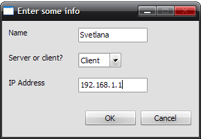

The client is the more limited version of the program. It may connect to a server, and utilize the chat function with some commands, but the functionality is limited to only that.
After the program is run, the prompt dialog is displayed. This is approximately what it should look like once the options are set correctly:

The name and IP entered may be different. Actually, the IP should be different.
Once the info has been entered and the OK button pressed, the program will attempt to connect to the specified IP. If the IP entered is invalid, or it's just down, there is a 10 second timeout to the process, and an error message is displayed in the status window. If it does manage to connect, then the status window will display a message indicating the success, and the user may start entering messages.
Once the client is up and running, there isn't much to say about using it. It's the standard IM program. However, because this is the client, there is a restriction. Namely, the user does not have permission to modify the contents of the whiteboard. This is an admin privilege only.
Also, there are two special commands that can be given to the text window to perform certain actions.
/me [text]: This command will, instead of displaying the username and their comment, will replace /me with the username, and place [text] after it.
/roll [number]: This performs a dice roll. The sides of the die are determined by [number].